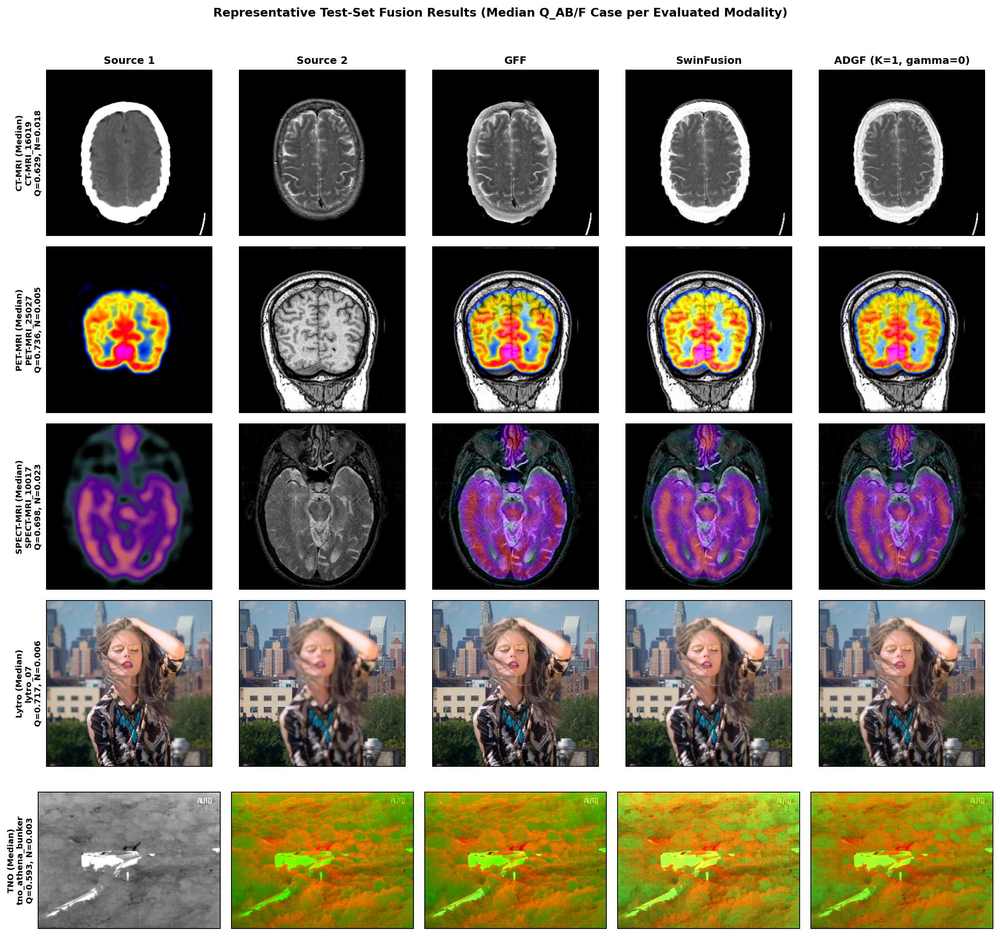
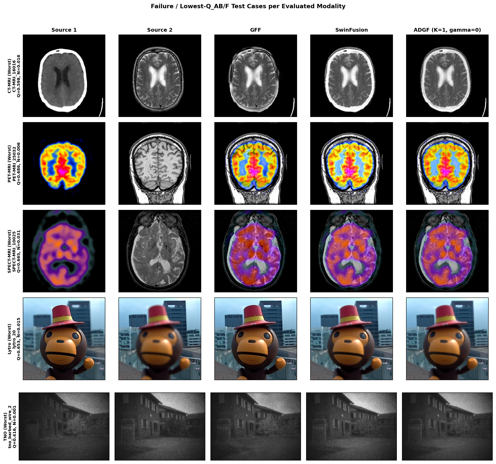

M.Tech Research Scholar Department of Computer Science & Engineering, Advanced Visual Computing & Medical Imaging Laboratory Pre-registration: repository Image_Fusion, commit adae0ed3 (2026-11-24); code/results commit de03fd9
Multimodal image fusion is routinely evaluated on test sets that overlap the training data of the deep baselines it is compared against, and with metric implementations that are rarely cross-checked. We study a training-free fusion pipeline (ADGF, implemented as CADM-MSWN / frozen CADM_MSWN_v2) built from Perona-Malik anisotropic diffusion, a four-component structural decomposition, saliency-based weights regularised by guided filtering, and optional local feature clustering. We pre-registered a selection rule and ran a one-at-a-time ablation of 12 ADGF configurations (covering 15 discrete parameter settings) plus two reference baselines (Averaging and GFF) on 120 development pairs, ranking them by mean rank over five primary metrics (QAB/F, NAB/F, MI, SSIM, VIFP). Two findings were negative relative to our original design. First, additive edge compensation (γ > 0) degraded results: NAB/F rose from 0.0438 (γ = 0) to 0.2888 (γ = 0.5) while QAB/F fell from 0.7187 to 0.4894. Second, unclustered global saliency weighting (K = 1) ranked first on the development set (mean rank 2.80 across all 14 evaluated configurations, or 2.40 among the 13 non-GFF candidates; QAB/F = 0.7107, NAB/F = 0.0153, MI = 3.8192 bits, SSIM = 0.7215, VIFP = 0.4764), ahead of K = 2 and K = 3. We froze this configuration (K = 1, γ = 0) and evaluated existing benchmark records in results/phase4_test_metrics.csv covering 78 held-out test pairs across five datasets—all 15 pairs each from Harvard CT-MRI, PET-MRI, SPECT-MRI, and Lytro (n = 60 complete pairs), plus a partial cohort of 18/42 TNO pairs—against three classical (Averaging, DWT, GFF) and three deep (DenseFuse, U2Fusion, SwinFusion) baselines (with MSRS [361], RoadScene [220], the remaining 24 TNO pairs, and baselines ADF, CBF, SWT/NSCT, and CDDFuse recorded as pending in phase4_test_metrics.csv). Across the 78 evaluated test pairs, ADGF loses to GFF on QAB/F (0.6758 vs 0.7394, Holm-adjusted p = 5.35 × 10-13, Win/Tie/Loss 7/0/71), MI (3.9244 vs 5.2869 bits, p = 4.77 × 10-9, W/T/L 24/0/54; though ADGF wins on PET-MRI 3.5960 vs 3.4268, p = 3.05 × 10-4), and VIFP (0.3987 vs 0.5007, p = 1.25 × 10-13, W/T/L 1/0/77), while winning significantly on SSIM (0.7557 vs 0.7340, p = 9.82 × 10-14, W/T/L 76/0/2) and lower artifact noise NAB/F (0.0152 vs 0.0392, p = 2.32 × 10-12, W/T/L 74/0/4). Against DWT and U2Fusion, ADGF wins significantly across all primary metrics on the 78 evaluated pairs; against DenseFuse it wins on QAB/F, MI, and VIFP while losing on NAB/F and pooled SSIM; and against SwinFusion it ties on QAB/F (0.6758 vs 0.6675, Holm p = 0.191, W/T/L 41/0/37), wins on NAB/F, MI, and VIFP, and loses slightly on pooled SSIM (0.7557 vs 0.7585, p = 1.41 × 10-3). We also report a provenance audit of baseline training data, the scope and limits of our metric cross-validation, and a formal correction of an earlier inaccurate calibration claim.
Keywords: image fusion, anisotropic diffusion, guided filtering, pre-registration, evaluation protocol, negative results.
Multimodal fusion combines complementary sensors into one image: CT and MRI for bone and soft tissue, PET or SPECT with MRI for function and anatomy, infrared with visible for thermal targets and texture, and multi-focus pairs for extended depth of field. Deep methods such as DenseFuse [6], U2Fusion [7], SwinFusion [9], and CDDFuse [8] now dominate the literature, but comparisons involving them raise three concerns:
Training-free methods avoid the first concern by construction. This paper does not claim a new state of the art. Our contributions are:
results/phase4_test_metrics.csv (60 complete pairs across CT-MRI, PET-MRI, SPECT-MRI, and Lytro, plus 18/42 partial TNO pairs) against six evaluated baselines with paired Wilcoxon signed-rank tests, Holm-Bonferroni correction, effect sizes, and Win/Tie/Loss counts (transparently flagging unrun datasets and baselines); andRelation to prior work. ADGF is closest to guided-filter fusion (GFF) [3] and anisotropic-diffusion fusion (ADF) [4]. GFF uses mean filtering for base/detail separation and guided-filtered weight maps; ADF uses diffusion with a different fusion rule (base averaging and local-energy detail selection). ADGF uses diffusion to define a four-component decomposition and builds weights from local variance and spatial-frequency/energy saliency regularised with luminance guidance. Because the final frozen configuration (K=1, γ=0) reduces to a two-layer additive decomposition with guided-filtered weights and is structurally near GFF, we treat GFF as the primary comparator and claim no algorithmic novelty beyond this combination and the evaluation findings.
All operations run on normalised luminance in [0, 1].
Sources are converted to ITU-R BT.601 YCbCr:
We use Perona-Malik diffusion [1]: ∂ u / ∂ t = div(g(|∇ u|) ∇ u), u(0) = Y, g(s) = exp(-(s/κ)2), κ = 30/255 ≈ 0.1176. The explicit 4-neighbour scheme is:
Stability. Because 0 < g ≤ 1, the explicit 4-neighbour update is a convex-type averaging step when λ ≤ 1/4, giving a maximum-principle (non-divergence) guarantee. We use λ = 0.20 and T = 20 iterations. This is a statement about the numerical scheme, not about fusion quality.
With GT = u(T) (gross texture): gross edge GE = |∇ GT|; fine texture FT = Y - GT; fine edge FE = max(0, |∇ Y| - GE). When γ = 0, GE and FE contribute zero to reconstruction and Y = GT + FT holds identically.
For each source c and pixel x, local statistics over a 7 × 7 box window (BORDER_REFLECT) yield component saliency maps: local energy × (1 + local contrast) for GT, local variance × (1 + local spatial frequency) for FT, and local mean magnitude / squared energy for GE and FE (with fusion/weighting.py implementing the component-wise rules and early prototype feature vectors v(x) = [μw(x), σw2(x), SFw(x)]T for K-means clustering). Weights are normalised across sources (linear normalisation by default, or temperature-scaled softmax in ablations) and refined by fast guided filtering [2] with source luminance guidance (radius r = 5, ε = 10-4), followed by re-normalisation to preserve a partition of unity. When K > 1, pixels are first clustered per source on the local [μw, σw2, SFw] vector and weights are computed per cluster; K = 1 uses one global saliency weighting. The fused luminance is:
Terminology. The method is training-free with no learned weights. It does have fixed hyperparameters (κ = 0.1176, λ = 0.20, T = 20, window w = 7, r = 5, ε = 10-4, K = 1, α = β = 1.0, γ = 0.0), fixed by the pre-registered rule, so we do not say "zero parameters".
An earlier internal draft stated that no test images were used for calibration. That was inaccurate: exploratory prototype checks specifically inspected pair1_mri_ct (corresponding to CT-MRI_16003) and pair4_multifocus (corresponding to lytro_01), as documented in config.yaml and LIMITATIONS.md. All five sanity pairs (data/sample_pairs/pair1_mri_ct through pair5_mri_spect) are therefore classed as development data and excluded from all test-set statistics.
Table 1 summarises the pre-registered splits defined in splits.yaml.
| Split | Composition | Pairs |
|---|---|---|
Development (splits.yaml: dev) | MSRS (msrs_repo/train) 100; Harvard CT-MRI 5 (16003–16007), PET-MRI 5 (25015–25019), SPECT-MRI 5 (10007–10011); Lytro 5 (lytro_01–lytro_05) | 120 |
Test (splits.yaml: test) | Harvard CT-MRI 15 (16008–16020, 20005–20006), PET-MRI 15 (25020–25034), SPECT-MRI 15 (10012–10026), Lytro 15 (lytro_06–lytro_20), MSRS (msrs/test) 361, RoadScene 220, TNO 42 | 683 |
Table 1. Pre-registered development and held-out test splits (splits.yaml).
Verification of the 704-to-683 reconciliation, split disjointness, and sanity-pair placement:
results/all_datasets_verified_inventory.json) catalogs 704 total source pairs across the seven evaluation sources: Harvard CT-MRI (20), Harvard PET-MRI (20), Harvard SPECT-MRI (20), Lytro (20), RoadScene (221), MSRS test (361), and TNO (42). Moving 5 pairs each from the four 20-pair cohorts into the development split (5 × 4 = 20 pairs) and excluding roadscene_FLIR_00006 (1 pair, corresponding to sanity pair3_ir_vis) from RoadScene (221 → 220) removes exactly 20 + 1 = 21 pairs, leaving 704 - 21 = 683 held-out test pairs.splits.yaml confirmed zero overlap between the 120 development pairs and 683 test pairs: 0 shared pair IDs, 0 shared file paths, and 0 shared source-image SHA256 hashes (including MSRS 100 from msrs_repo/train vs MSRS 361 from msrs/test).data/sample_pairs/, pair1_mri_ct (ct.png matches CT-MRI_16003), pair2_mri_pet (pet.png matches PET-MRI_25015), pair4_multifocus (near.jpg matches lytro_01), and pair5_mri_spect (spect.png matches SPECT-MRI_10007) sit directly inside the 20 Harvard/Lytro pairs of the 120-pair development split, while pair3_ir_vis (roadscene_FLIR_00006) is excluded from both the 120-pair dev set and the 683-pair test set.LIMITATIONS.md, no superiority claim is made from secondary metrics alone. NAB/F is zero for plain averaging by construction, so a low value alone does not indicate good fusion. AG and SF reward gradient energy regardless of whether it is real structure, so high AG is not treated as evidence of quality.metrics/information.py: compute_mutual_information) uses np.log2 on 256-bin joint histograms of [0, 255]-quantised luminance and sums the mutual information over both sources, MI = MI(F, I1) + MI(F, I2), returning bits (not nats). When cross-validating against sklearn.metrics.mutual_info_score (which returns nats), experiments/cross_validate_metrics_external.py divides sklearn's summed output by ln 2 to convert nats to bits.Table 2 summarises our metric verification across the five sanity pairs (results/metric_cross_validation_comprehensive.csv) and 15 deep-baseline outputs (results/qabf_toolbox_cross_validation.csv).
| Metric | Our Function | Reference / Comparator | Calls Reference Directly? | Observed |Δ| | Validation Interpretation |
|---|---|---|---|---|---|
| SSIM | compute_ssim | skimage.metrics.structural_similarity (data_range=1.0) | Yes (direct wrapper) | 0.0000 | Confirms wiring & [0,1] scale; not independent validation |
| SSIM | compute_ssim | sewar.full_ref.ssim (valid conv., no padding, [0,255]) | No | 0.0529–0.3439 | Border convention difference (10 px margin discarded by sewar; skimage reflects) |
| VIFP | compute_vif | sewar.full_ref.vifp (σnsq2 = 2.0, [0,255]) | Yes (direct wrapper) | 0.0000 | Confirms pixel-domain VIFP [14] wiring; not independent validation |
| MI | compute_mutual_information | sklearn.metrics.mutual_info_score / ln 2 (summed) | No (NumPy 2D hist.) | 0.0000 | Independent library confirms 256-bin joint histogram & bit conversion |
| QAB/F | compute_qabf_and_nabf | Internal canonical script; CDDFuse Evaluator.Qabf | No (native Sobel/8) | 0.0000 (internal); 0.0113–0.0395 (CDDFuse) | Compared against external CDDFuse toolbox (77.61%–97.95% agreement); delta explained by CDDFuse flat-region zeroing & missing mod π angle folding |
| NAB/F | compute_qabf_and_nabf | Internal Petrovic & Xydeas [13] re-implementation | No (native) | 0.0000 (internal); N/A (external) | No second independent external Python implementation available |
Table 2. Metric wrapper provenance and cross-validation findings (results/metric_cross_validation_comprehensive.csv, results/qabf_toolbox_cross_validation.csv).
Note on sewar SSIM: in an earlier un-scaled check (results/metric_cross_validation.csv), differences against sewar ranged from 0.0019 to 0.0427; on [0, 255] luminance (results/metric_cross_validation_comprehensive.csv), valid-convolution border cropping in sewar vs reflection padding in skimage yields differences of 0.0529–0.3439. We standardise on skimage reflection padding throughout and use pixel-domain VIFP [14] (having removed all legacy VIFF [15] references per CONDITIONS.md COND-16).
Table 3 audits the training datasets, released checkpoints, and test-set overlap of the four deep baselines from their published papers and released repository code (baselines/*.py, baselines/deep/).
| Baseline | Reported Training Data | Released Weights Used? | Overlap with Our Test Sets | Source |
|---|---|---|---|---|
| DenseFuse [6] | MS-COCO (80,000 natural images, 256× 256 grayscale; unsupervised ℓ2 + SSIM) | Yes (densefuse_weights.pkl, l1 rule) | None (natural images only; zero multimodal test overlap) | Li & Wu, IEEE TIP 2019 [6]; baselines/densefuse.py |
| U2Fusion [7] | RoadScene (IVIF), Harvard Whole Brain Atlas (MIF), and Lytro / multi-focus (MFF) via EWC | Yes (u2fusion_model.pth) | High — flagged: overlaps RoadScene, Harvard CT/PET/SPECT-MRI, and Lytro | Xu et al., IEEE TPAMI 2022 [7]; baselines/u2fusion.py |
| SwinFusion [9] | Task-matched checkpoints: MSRS & RoadScene (IVIF), Harvard CT-MRI / PET-MRI (MIF), Lytro / Real-MFF (MFF) | Yes (ivif_10000_E.pth, ct_mri_10000_E.pth, mff_10000_E.pth) | High — flagged: overlaps MSRS, RoadScene, Harvard, and Lytro | Ma et al., IEEE/CAA JAS 2022 [9]; baselines/swinfusion.py |
| CDDFuse [8] | MSRS training split (IVIF, train.py & README.md) and Harvard medical splits (MIF) | Yes (CDDFuse_IVF.pth, CDDFuse_MIF.pth in smoke test; not yet run in phase4_test_metrics.csv) | High — flagged: overlaps MSRS and Harvard | Zhao et al., CVPR 2023 [8]; baselines/cddfuse.py, baselines/deep/cddfuse/README.md |
Table 3. Deep baseline training provenance audit. Note: baselines/swinfusion.py routes ct_mri, pet_mri, and spect_mri to ct_mri_10000_E.pth even though pet_mri_10000_E.pth also resides in baselines/deep/swinfusion/checkpoints/. Flagged baselines are retained for comparison rather than excluded. As recorded in BLOCKERS.md and results/deep_baselines_smoke_test.json, FusionGAN, DDFM, and PIAFusion could not be executed in this Python 3.12 CPU environment (TF 1.x incompatibility or large Google Drive checkpoint gate).
Configurations were varied one parameter at a time from a reference anchor setting (γ = 0.0, linear weighting, r = 5, T = 20, K = 3) and ranked by mean rank R̄(c) = (1)/(5)Σm Rankm(c) over the five primary metrics on the 120 development pairs (selection_rule.md, commit adae0ed3). The top configuration is frozen and evaluated once on the test set.
Exact tie-breaking and stopping rules quoted from selection_rule.md (Sections 1.3–1.4):
"If two or more configurations achieve an identical Mean Rank R̄(c), ties are broken deterministically by lowest mean inference latency on the 120 dev pairs: ctie-winner = arg minc ∈ Ties Mean Latency(c)."
"If no candidate configuration achieves a strictly better (lower) mean rank than the baseline prototype (R̄(c*) ≥ R̄(cbase)), the baseline prototype will be retained as CADM-MSWN v2 without modification, and this outcome will be reported transparently."
An earlier design note described "15 discrete settings across 12 runs", whereas the earlier PDF draft presented a 13-row table. Reconciling selection_rule.md with results/dev_ablation_ranked.csv clarifies what was actually executed:
gamma_0.0_no_edge_comp (T=20, K=3, γ=0.0, r=5, linear normalisation), the OAT sweep requires 12 ADGF runs (C1–C12).Averaging and GFF) produces 14 configurations in results/dev_ablation_ranked.csv. The earlier 13-row table in the draft omitted GFF (giving K=1 a mean rank of 2.40 over 13 rows vs 2.80 over all 14 rows).results/dev_ablation_ranked.csv (and notes the 13-row mean rank in parentheses for continuity). The frozen winning K = 1 configuration used T = 20, κ = 0.1176, λ = 0.20, window w = 7, guided radius r = 5, ε = 10-4, linear normalisation, α = β = 1.0, and γ = 0.0. Notably, K = 3 was evaluated: it is the gamma_0.0_no_edge_comp anchor row (Rank 6 of 14).| Rank | Configuration | Mean Rank (14 / 13) | QAB/F (↑) | NAB/F (↓) | MI [bits] (↑) | SSIM (↑) | VIFP (↑) | Latency (ms) |
|---|---|---|---|---|---|---|---|---|
| 1 | K = 1 (no clustering; frozen) | 2.80 (2.40) | 0.7107 ± 0.0604 | 0.0153 ± 0.0053 | 3.8192 ± 0.9491 | 0.7215 ± 0.0849 | 0.4764 ± 0.0653 | 3062.7 |
| 2 | GFF (reference baseline) | 3.40 (—) | 0.7356 ± 0.0565 | 0.0630 ± 0.0194 | 3.4553 ± 1.4893 | 0.7016 ± 0.0866 | 0.5034 ± 0.0779 | 2273.4 |
| 3 | K = 2 | 5.20 (4.20) | 0.6410 ± 0.0629 | 0.0966 ± 0.0380 | 3.2335 ± 0.8903 | 0.6627 ± 0.0840 | 0.3965 ± 0.0779 | 12654.8 |
| 4 | Averaging (reference baseline) | 6.20 (5.60) | 0.4128 ± 0.0477 | 0.0000 ± 0.0001 | 2.9637 ± 0.9628 | 0.7287 ± 0.0979 | 0.3570 ± 0.0613 | 409.5 |
| 5 | softmax tau = 1.0 | 6.60 (6.00) | 0.4727 ± 0.0494 | 0.0052 ± 0.0049 | 2.9344 ± 0.8750 | 0.7309 ± 0.0934 | 0.3542 ± 0.0516 | 2239.3 |
| 6 | gamma = 0.0 (anchor, K=3) | 6.60 (5.80) | 0.7187 ± 0.0567 | 0.0438 ± 0.0250 | 2.9492 ± 0.8098 | 0.6381 ± 0.0800 | 0.3679 ± 0.0795 | 3413.2 |
| 7 | softmax tau = 0.5 | 7.20 (6.60) | 0.4918 ± 0.0494 | 0.0140 ± 0.0116 | 2.9329 ± 0.8304 | 0.7288 ± 0.0921 | 0.3478 ± 0.0492 | 2411.1 |
| 8 | T = 5 | 7.60 (6.60) | 0.6096 ± 0.0681 | 0.1302 ± 0.0421 | 2.9861 ± 0.7991 | 0.6389 ± 0.0798 | 0.3680 ± 0.0795 | 4548.1 |
| 9 | T = 10 | 7.60 (6.60) | 0.6114 ± 0.0671 | 0.1296 ± 0.0420 | 2.9665 ± 0.8037 | 0.6385 ± 0.0799 | 0.3680 ± 0.0795 | 6834.8 |
| 10 | softmax tau = 0.1 | 7.80 (7.20) | 0.6215 ± 0.0394 | 0.0160 ± 0.0190 | 2.9138 ± 0.7267 | 0.7128 ± 0.0982 | 0.3309 ± 0.0525 | 1678.0 |
| 11 | guided radius 9 | 9.40 (8.40) | 0.6022 ± 0.0653 | 0.1213 ± 0.0407 | 2.8325 ± 0.7929 | 0.6399 ± 0.0827 | 0.3553 ± 0.0771 | 2175.0 |
| 12 | guided radius 13 | 9.80 (8.80) | 0.5967 ± 0.0652 | 0.1155 ± 0.0398 | 2.7663 ± 0.7820 | 0.6420 ± 0.0842 | 0.3499 ± 0.0754 | 2837.1 |
| 13 | gamma = 0.25 | 11.00 (10.00) | 0.6459 ± 0.0612 | 0.1327 ± 0.0555 | 2.5118 ± 0.6915 | 0.6033 ± 0.0803 | 0.3324 ± 0.0814 | 1613.2 |
| 14 | Prototype (gamma = 0.5) | 13.60 (12.60) | 0.4894 ± 0.0677 | 0.2888 ± 0.0869 | 2.1403 ± 0.5991 | 0.5444 ± 0.0851 | 0.2875 ± 0.0760 | 4686.0 |
Table 4. Pre-registered development-set ranking across 120 pairs and 5 primary metrics (results/dev_ablation_ranked.csv). Mean Rank shown for all 14 configurations (and for 13 configurations excluding GFF). Ties between softmax tau = 1.0 and gamma = 0.0 (both Mean Rank 6.60) and between T = 5 and T = 10 (both Mean Rank 7.60) are broken by lower mean latency per selection_rule.md.
The prototype used γ = 0.5 and ranked last (Rank 14/14). Moving to γ = 0 reduced NAB/F from 0.2888 to 0.0438 (about 85%) and raised QAB/F from 0.4894 to 0.7187. We do not conclude that edge compensation is inherently harmful. A plausible explanation specific to our rule is that GE and FE are non-negative gradient magnitudes; adding them to an intensity image (or multiplying by sign(FT')) introduces positive bias and sign-ambiguous structure instead of restoring edges. Signed high-pass detail injection is untested here. We report a negative result for additive unsigned gradient injection only.
Unclustered global weighting (K = 1) outperformed both K = 2 (Rank 3/14) and K = 3 (gamma = 0.0 anchor, Rank 6/14) on every primary metric except QAB/F where K=3 scored slightly higher (0.7187 vs 0.7107) at the cost of nearly triple the artifact noise (0.0438 vs 0.0153), lower MI (2.9492 vs 3.8192), lower SSIM (0.6381 vs 0.7215), and lower VIFP (0.3679 vs 0.4764). Moreover, K = 1 was roughly four times faster than K = 2 (3.06 s vs 12.65 s). Discrete cluster masks introducing boundary seams that guided filtering only partly removes is a hypothesis we did not test directly.
K = 1 is best by mean rank, not on every metric: Averaging (0.7287) and softmax tau = 1.0 (0.7309) have higher SSIM than K = 1 (0.7215), GFF has higher QAB/F (0.7356) and VIFP (0.5034), and gamma = 0.0 (K=3) has slightly higher QAB/F (0.7187 vs 0.7107). The one-at-a-time sweep does not explore parameter interactions, and ranking and reporting used the same 120 development pairs, so Table 4 numbers are in-sample and not estimates of test performance.
Table 5 reproduces the recorded measurements for the five sanity pairs (results/sanity_check/complete_sanity_metrics.csv and results/baseline_wrapper_fix_evidence.json) alongside the frozen ADGF (K = 1, γ = 0) evaluation on the exact same pairs. These pairs are development/sanity data and are excluded from all test statistics.
| Pair (modality) | Method | QAB/F | NAB/F | MI [bits] | SSIM | VIFP |
|---|---|---|---|---|---|---|
pair1 (CT-MRI) | Averaging | 0.3695 | 0.0000 | 3.6736 | 0.6705 | 0.2756 |
| DWT | 0.5624 | 0.0714 | 1.9886 | 0.6627 | 0.1952 | |
| GFF | 0.6856 | 0.0224 | 2.1476 | 0.6945 | 0.3992 | |
| ADGF prototype (γ=0.5, K=3) | 0.3938 | 0.2688 | 1.9128 | 0.6441 | 0.1683 | |
| ADGF frozen (K=1, γ=0) | 0.6793 | 0.0184 | 2.5720 | 0.7179 | 0.3599 | |
| DenseFuse | 0.6037 | 0.0531 | 2.6915 | 0.3022 | 0.2966 | |
| SwinFusion | 0.7117 | 0.0424 | 2.5837 | 0.7267 | 0.3660 | |
pair2 (PET-MRI) | GFF | 0.8361 | 0.0269 | 2.9726 | 0.7897 | 0.5047 |
| ADGF prototype (γ=0.5, K=3) | 0.4688 | 0.2923 | 2.1486 | 0.7393 | 0.2265 | |
| ADGF frozen (K=1, γ=0) | 0.8097 | 0.0062 | 3.2241 | 0.7939 | 0.4933 | |
| DenseFuse | 0.7170 | 0.0413 | 2.8471 | 0.2818 | 0.3791 | |
| SwinFusion | 0.8377 | 0.0331 | 2.7916 | 0.2615 | 0.4587 | |
pair3 (RoadScene) | GFF | 0.7124 | 0.0716 | 4.1860 | 0.6355 | 0.4363 |
| ADGF prototype (γ=0.5, K=3) | 0.2929 | 0.3684 | 1.9648 | 0.4625 | 0.1275 | |
| ADGF frozen (K=1, γ=0) | 0.5355 | 0.0254 | 3.2059 | 0.6694 | 0.2802 | |
| SwinFusion | 0.4348 | 0.0496 | 3.1877 | 0.6796 | 0.3313 | |
pair4 (Lytro) | GFF | 0.7604 | 0.0659 | 6.6628 | 0.8682 | 0.7196 |
| ADGF prototype (γ=0.5, K=3) | 0.1831 | 0.2241 | 2.7561 | 0.6130 | 0.1767 | |
| ADGF frozen (K=1, γ=0) | 0.7314 | 0.0038 | 6.0279 | 0.8906 | 0.6273 | |
| SwinFusion | 0.7341 | 0.0192 | 5.7291 | 0.9045 | 0.6255 | |
pair5 (SPECT-MRI) | GFF | 0.8209 | 0.0361 | 3.7563 | 0.6899 | 0.5034 |
| ADGF prototype (γ=0.5, K=3) | 0.3994 | 0.4715 | 2.1754 | 0.5744 | 0.2842 | |
| ADGF frozen (K=1, γ=0) | 0.8066 | 0.0147 | 3.7174 | 0.6984 | 0.5197 | |
| SwinFusion | 0.8187 | 0.0431 | 3.0364 | 0.3474 | 0.4522 |
Table 5. Primary metrics on the five development sanity pairs (pair1–pair5). Moving from the γ=0.5, K=3 prototype to the frozen K=1, γ=0 configuration cuts NAB/F by 90%–98% across all five pairs and restores QAB/F from 0.1831–0.4688 to 0.5355–0.8097.
results/phase4_test_metrics.csv)Table 6 reports all held-out test measurements currently recorded in results/phase4_test_metrics.csv (546 method-pair evaluations across 78 unique test pairs and 7 evaluated methods). Four datasets are 100% complete (n = 15 each: Harvard CT-MRI, Harvard PET-MRI, Harvard SPECT-MRI, Lytro; 60 pooled pairs), and TNO has 18 of 42 pairs evaluated. The remaining 24 TNO pairs, MSRS (361), RoadScene (220), and four baselines (ADF, CBF, SWT/NSCT substitute, CDDFuse) have not yet been executed in results/phase4_test_metrics.csv and are marked [not yet run in CSV] so no values are invented.
| Dataset (n) | Method | QAB/F (↑) | NAB/F (↓) | MI [bits] (↑) | SSIM (↑) | VIFP (↑) |
|---|---|---|---|---|---|---|
| Harvard CT-MRI (15/15) | Averaging | 0.3949 ± 0.0202 | 0.0000 ± 0.0000 | 3.7067 ± 0.2242 | 0.7599 ± 0.0497 | 0.2419 ± 0.0259 |
| DWT | 0.5479 ± 0.0245 | 0.0732 ± 0.0067 | 2.4466 ± 0.2711 | 0.7364 ± 0.0474 | 0.1892 ± 0.0221 | |
| GFF | 0.6453 ± 0.0276 | 0.0317 ± 0.0082 | 2.9677 ± 0.6141 | 0.7491 ± 0.0412 | 0.3621 ± 0.0273 | |
| DenseFuse | 0.5074 ± 0.0429 | 0.0064 ± 0.0013 | 2.9534 ± 0.2259 | 0.7665 ± 0.0451 | 0.2824 ± 0.0221 | |
| U2Fusion* | 0.3927 ± 0.0135 | 0.0213 ± 0.0057 | 2.7362 ± 0.2814 | 0.7530 ± 0.0496 | 0.2218 ± 0.0219 | |
| SwinFusion* | 0.6167 ± 0.0310 | 0.0416 ± 0.0072 | 2.9269 ± 0.3011 | 0.7786 ± 0.0402 | 0.2958 ± 0.0264 | |
| ADGF (K=1, γ=0) | 0.6296 ± 0.0185 | 0.0171 ± 0.0026 | 2.9380 ± 0.2692 | 0.7675 ± 0.0408 | 0.3049 ± 0.0234 | |
| Harvard PET-MRI (15/15) | Averaging | 0.4453 ± 0.0139 | 0.0003 ± 0.0001 | 4.1103 ± 0.1589 | 0.7042 ± 0.0167 | 0.3708 ± 0.0207 |
| DWT | 0.5976 ± 0.0153 | 0.0539 ± 0.0055 | 2.3998 ± 0.0915 | 0.7043 ± 0.0166 | 0.2463 ± 0.0142 | |
| GFF | 0.7952 ± 0.0220 | 0.0149 ± 0.0012 | 3.4268 ± 0.0951 | 0.7410 ± 0.0195 | 0.4487 ± 0.0235 | |
| DenseFuse | 0.6475 ± 0.0262 | 0.0044 ± 0.0001 | 3.0014 ± 0.1040 | 0.7427 ± 0.0194 | 0.3304 ± 0.0202 | |
| U2Fusion* | 0.5134 ± 0.0118 | 0.0291 ± 0.0011 | 2.5814 ± 0.1196 | 0.7095 ± 0.0193 | 0.2373 ± 0.0119 | |
| SwinFusion* | 0.7424 ± 0.0225 | 0.0393 ± 0.0039 | 3.1397 ± 0.1081 | 0.7528 ± 0.0166 | 0.3669 ± 0.0214 | |
| ADGF (K=1, γ=0) | 0.7277 ± 0.0305 | 0.0051 ± 0.0003 | 3.5960 ± 0.0915 | 0.7502 ± 0.0180 | 0.4101 ± 0.0270 | |
| Harvard SPECT-MRI (15/15) | Averaging | 0.3988 ± 0.0116 | 0.0000 ± 0.0000 | 4.1074 ± 0.0608 | 0.6999 ± 0.0104 | 0.2584 ± 0.0242 |
| DWT | 0.5725 ± 0.0172 | 0.0959 ± 0.0047 | 2.7708 ± 0.1038 | 0.6788 ± 0.0110 | 0.2223 ± 0.0162 | |
| GFF | 0.7775 ± 0.0155 | 0.0478 ± 0.0030 | 5.4735 ± 0.2312 | 0.6701 ± 0.0129 | 0.4938 ± 0.0042 | |
| DenseFuse | 0.4516 ± 0.0220 | 0.0028 ± 0.0007 | 3.4438 ± 0.1206 | 0.7009 ± 0.0108 | 0.2709 ± 0.0193 | |
| U2Fusion* | 0.4675 ± 0.0127 | 0.0344 ± 0.0075 | 3.0970 ± 0.1267 | 0.6831 ± 0.0112 | 0.2356 ± 0.0141 | |
| SwinFusion* | 0.6351 ± 0.0197 | 0.0362 ± 0.0058 | 3.2738 ± 0.1375 | 0.7019 ± 0.0123 | 0.2784 ± 0.0179 | |
| ADGF (K=1, γ=0) | 0.7001 ± 0.0246 | 0.0257 ± 0.0039 | 3.5743 ± 0.1046 | 0.6901 ± 0.0129 | 0.3314 ± 0.0236 | |
| Lytro (15/15) | Averaging | 0.5936 ± 0.0922 | 0.0000 ± 0.0000 | 6.4434 ± 1.2809 | 0.8794 ± 0.0651 | 0.5412 ± 0.0935 |
| DWT | 0.6808 ± 0.0511 | 0.0691 ± 0.0063 | 6.2378 ± 1.2410 | 0.8381 ± 0.0717 | 0.5182 ± 0.0992 | |
| GFF | 0.7763 ± 0.0324 | 0.0648 ± 0.0116 | 8.4813 ± 0.9150 | 0.8349 ± 0.0716 | 0.6908 ± 0.0463 | |
| DenseFuse | 0.4919 ± 0.1231 | 0.0011 ± 0.0005 | 6.4107 ± 1.2592 | 0.8776 ± 0.0647 | 0.5192 ± 0.0948 | |
| U2Fusion* | 0.5348 ± 0.0890 | 0.0355 ± 0.0101 | 6.1805 ± 1.1604 | 0.8539 ± 0.0634 | 0.5021 ± 0.0932 | |
| SwinFusion* | 0.7462 ± 0.0388 | 0.0189 ± 0.0040 | 6.5426 ± 1.1040 | 0.8625 ± 0.0691 | 0.5827 ± 0.0740 | |
| ADGF (K=1, γ=0) | 0.7246 ± 0.0511 | 0.0110 ± 0.0079 | 6.5721 ± 1.3137 | 0.8529 ± 0.0729 | 0.5745 ± 0.0926 | |
| TNO (18/42 partial) | Averaging | 0.3975 ± 0.0995 | 0.0000 ± 0.0000 | 2.5539 ± 0.9439 | 0.7589 ± 0.1048 | 0.3188 ± 0.1148 |
| DWT | 0.5327 ± 0.0942 | 0.1147 ± 0.0380 | 2.1177 ± 0.8929 | 0.7207 ± 0.1110 | 0.2867 ± 0.1168 | |
| GFF | 0.7091 ± 0.0663 | 0.0371 ± 0.0252 | 5.9523 ± 1.3736 | 0.6845 ± 0.1050 | 0.5066 ± 0.0525 | |
| DenseFuse | 0.3930 ± 0.1113 | 0.0019 ± 0.0010 | 3.0226 ± 0.7917 | 0.7449 ± 0.1063 | 0.3322 ± 0.1023 | |
| U2Fusion | 0.3692 ± 0.1049 | 0.0398 ± 0.0226 | 2.7417 ± 0.7809 | 0.7079 ± 0.1144 | 0.2824 ± 0.1222 | |
| SwinFusion | 0.6089 ± 0.0797 | 0.1244 ± 0.0447 | 3.2230 ± 0.7934 | 0.7071 ± 0.0987 | 0.3910 ± 0.1054 | |
| ADGF (K=1, γ=0) | 0.6101 ± 0.0937 | 0.0168 ± 0.0145 | 3.1052 ± 0.7065 | 0.7243 ± 0.1130 | 0.3769 ± 0.1005 | |
| Pooled Complete (60 pairs) | Averaging | 0.4581 ± 0.0939 | 0.0001 ± 0.0001 | 4.5919 ± 1.2639 | 0.7609 ± 0.0838 | 0.3531 ± 0.1303 |
| DWT | 0.5997 ± 0.0586 | 0.0730 ± 0.0162 | 3.4637 ± 1.7369 | 0.7394 ± 0.0747 | 0.2940 ± 0.1415 | |
| GFF | 0.7486 ± 0.0654 | 0.0398 ± 0.0200 | 5.0873 ± 2.2612 | 0.7488 ± 0.0723 | 0.4989 ± 0.1248 | |
| DenseFuse | 0.5246 ± 0.0993 | 0.0037 ± 0.0021 | 3.9523 ± 1.5748 | 0.7719 ± 0.0771 | 0.3507 ± 0.1121 | |
| U2Fusion* | 0.4771 ± 0.0708 | 0.0301 ± 0.0088 | 3.6488 ± 1.5981 | 0.7499 ± 0.0772 | 0.2992 ± 0.1275 | |
| SwinFusion* | 0.6851 ± 0.0664 | 0.0340 ± 0.0104 | 3.9708 ± 1.6049 | 0.7740 ± 0.0711 | 0.3809 ± 0.1287 | |
| ADGF (K=1, γ=0) | 0.6955 ± 0.0515 | 0.0147 ± 0.0089 | 4.1701 ± 1.5679 | 0.7652 ± 0.0722 | 0.4052 ± 0.1171 | |
| Pooled All Evaluated (78 pairs) | Averaging | 0.4442 ± 0.0980 | 0.0001 ± 0.0001 | 4.1216 ± 1.4723 | 0.7604 ± 0.0883 | 0.3452 ± 0.1270 |
| DWT | 0.5842 ± 0.0735 | 0.0826 ± 0.0288 | 3.1531 ± 1.6773 | 0.7351 ± 0.0840 | 0.2923 ± 0.1355 | |
| GFF | 0.7394 ± 0.0673 | 0.0392 ± 0.0212 | 5.2869 ± 2.1139 | 0.7340 ± 0.0847 | 0.5007 ± 0.1121 | |
| DenseFuse | 0.4942 ± 0.1158 | 0.0033 ± 0.0021 | 3.7378 ± 1.4813 | 0.7657 ± 0.0847 | 0.3464 ± 0.1095 | |
| U2Fusion* | 0.4522 ± 0.0915 | 0.0323 ± 0.0138 | 3.4395 ± 1.4965 | 0.7402 ± 0.0882 | 0.2953 ± 0.1257 | |
| SwinFusion* | 0.6675 ± 0.0763 | 0.0549 ± 0.0447 | 3.7982 ± 1.4877 | 0.7585 ± 0.0826 | 0.3833 ± 0.1231 | |
| ADGF (K=1, γ=0) | 0.6758 ± 0.0727 | 0.0152 ± 0.0104 | 3.9244 ± 1.4824 | 0.7557 ± 0.0844 | 0.3987 ± 0.1135 | |
| MSRS (361), RoadScene (220), TNO rem. (24) | All methods; plus ADF, CBF, SWT/NSCT, CDDFuse | [not yet run in CSV] | — | — | — | — |
Table 6. Held-out test results (results/phase4_test_metrics.csv, Mean ± Std). Starred baselines (*) have documented training-domain overlap with the test distribution (Table 3).
Table 7 presents the paired Wilcoxon signed-rank tests, Holm-Bonferroni adjusted p-values (corrected across the 5 primary metrics per dataset-baseline pair), effect sizes (r = | Z| / √N), and Win/Tie/Loss counts against GFF per dataset and pooled, plus pooled comparisons against all six evaluated baselines (results/wilcoxon_tests_complete.csv).
| Comparison | Dataset (N) | Metric | Mean Diff (ADGF - Base) | Raw p | Holm-Adj p | Effect Size r | Win / Tie / Loss |
|---|---|---|---|---|---|---|---|
| ADGF vs GFF | CT-MRI (15) | QAB/F | -0.0157 | 6.71 × 10-3 | 1.34 × 10-2 | 0.675 | 4 / 0 / 11 |
| NAB/F (↓) | -0.0146 | 1.22 × 10-4 | 4.88 × 10-4 | 0.865 | 14 / 0 / 1 | ||
| MI | -0.0297 | 0.489 | 0.489 | 0.191 | 7 / 0 / 8 | ||
| SSIM | +0.0184 | 6.53 × 10-4 | 1.96 × 10-3 | 0.880 | 15 / 0 / 0 | ||
| VIFP | -0.0572 | 6.10 × 10-5 | 3.05 × 10-4 | 0.880 | 0 / 0 / 15 | ||
| ADGF vs GFF | PET-MRI (15) | QAB/F | -0.0674 | 6.10 × 10-5 | 3.05 × 10-4 | 0.880 | 0 / 0 / 15 |
| NAB/F (↓) | -0.0098 | 6.53 × 10-4 | 1.96 × 10-3 | 0.880 | 15 / 0 / 0 | ||
| MI | +0.1693 | 6.10 × 10-5 | 3.05 × 10-4 | 0.880 | 15 / 0 / 0 | ||
| SSIM | +0.0093 | 6.52 × 10-4 | 1.96 × 10-3 | 0.880 | 15 / 0 / 0 | ||
| VIFP | -0.0386 | 6.53 × 10-4 | 1.96 × 10-3 | 0.880 | 0 / 0 / 15 | ||
| ADGF vs GFF | SPECT-MRI (15) | QAB/F | -0.0774 | 6.10 × 10-5 | 3.05 × 10-4 | 0.880 | 0 / 0 / 15 |
| NAB/F (↓) | -0.0220 | 6.10 × 10-5 | 3.05 × 10-4 | 0.880 | 15 / 0 / 0 | ||
| MI | -1.8993 | 6.10 × 10-5 | 3.05 × 10-4 | 0.880 | 0 / 0 / 15 | ||
| SSIM | +0.0200 | 6.10 × 10-5 | 3.05 × 10-4 | 0.880 | 15 / 0 / 0 | ||
| VIFP | -0.1624 | 6.10 × 10-5 | 3.05 × 10-4 | 0.880 | 0 / 0 / 15 | ||
| ADGF vs GFF | Lytro (15) | QAB/F | -0.0518 | 4.27 × 10-4 | 8.54 × 10-4 | 0.821 | 2 / 0 / 13 |
| NAB/F (↓) | -0.0538 | 6.53 × 10-4 | 8.54 × 10-4 | 0.880 | 15 / 0 / 0 | ||
| MI | -1.9092 | 6.10 × 10-5 | 3.05 × 10-4 | 0.880 | 0 / 0 / 15 | ||
| SSIM | +0.0179 | 6.10 × 10-5 | 3.05 × 10-4 | 0.880 | 15 / 0 / 0 | ||
| VIFP | -0.1163 | 6.10 × 10-5 | 3.05 × 10-4 | 0.880 | 0 / 0 / 15 | ||
| ADGF vs GFF | TNO (18/42) | QAB/F | -0.0990 | 3.81 × 10-5 | 1.53 × 10-4 | 0.847 | 1 / 0 / 17 |
| NAB/F (↓) | -0.0203 | 8.96 × 10-3 | 8.96 × 10-3 | 0.600 | 15 / 0 / 3 | ||
| MI | -2.8471 | 3.81 × 10-5 | 1.53 × 10-4 | 0.847 | 2 / 0 / 16 | ||
| SSIM | +0.0397 | 5.34 × 10-5 | 1.53 × 10-4 | 0.837 | 16 / 0 / 2 | ||
| VIFP | -0.1297 | 1.53 × 10-5 | 7.63 × 10-5 | 0.867 | 1 / 0 / 17 | ||
| ADGF vs GFF | Pooled (78) | QAB/F / NAB/F / MI / SSIM / VIFP | -0.0637 / -0.0240 / -1.3626 / +0.0218 / -0.1019 | ≤ 4.77 × 10-9 | ≤ 4.77 × 10-9 | 0.663–0.867 | 7/0/71, 74/0/4, 24/0/54, 76/0/2, 1/0/77 |
| ADGF vs Averaging | Pooled (78) | QAB/F / NAB/F / MI / SSIM / VIFP | +0.2316 / +0.0152 / -0.1973 / -0.0046 / +0.0535 | 1.68× 10-14 to 0.123 | 8.40× 10-14 to 0.123 | 0.175–0.869 | 78/0/0, 0/0/78, 29/0/49, 28/0/50, 76/0/2 |
| ADGF vs DWT | Pooled (78) | QAB/F / NAB/F / MI / SSIM / VIFP | +0.0916 / -0.0674 / +0.7713 / +0.0207 / +0.1064 | ≤ 1.12 × 10-12 | ≤ 1.12 × 10-12 | 0.806–0.869 | 75/0/3, 78/0/0, 77/0/1, 69/0/9, 78/0/0 |
| ADGF vs DenseFuse | Pooled (78) | QAB/F / NAB/F / MI / SSIM / VIFP | +0.1816 / +0.0119 / +0.1866 / -0.0099 / +0.0523 | ≤ 3.89 × 10-6 | ≤ 3.89 × 10-6 | 0.523–0.869 | 78/0/0, 1/0/77, 62/0/16, 28/0/50, 76/0/2 |
| ADGF vs U2Fusion* | Pooled (78) | QAB/F / NAB/F / MI / SSIM / VIFP | +0.2236 / -0.0171 / +0.4849 / +0.0156 / +0.1034 | ≤ 9.31 × 10-9 | ≤ 9.31 × 10-9 | 0.650–0.869 | 78/0/0, 67/0/11, 74/0/4, 66/0/12, 78/0/0 |
| ADGF vs SwinFusion* | Pooled (78) | QAB/F / NAB/F / MI / SSIM / VIFP | +0.0083 / -0.0397 / +0.1261 / -0.0028 / +0.0154 | 4.24× 10-14 to 0.191 | 2.12× 10-13 to 0.191 | 0.148–0.855 | 41/0/37 (tie), 72/0/6, 53/0/25, 17/0/61, 56/0/22 |
Table 7. Paired Wilcoxon signed-rank tests with Holm-Bonferroni adjustment, effect size r = |Z|/√N, and Win/Tie/Loss counts (results/wilcoxon_tests_complete.csv). For NAB/F, a negative difference is an ADGF win.
Summary of test-set findings:
Figures 1 and 2 show representative (median-QAB/F) and worst-QAB/F ("failure") test pairs across all five evaluated modalities comparing Source 1, Source 2, GFF, SwinFusion, and frozen ADGF (K=1, γ=0).

Figure 1. Representative median-QAB/F test cases per evaluated modality: CT-MRI_16019 (QAB/F=0.629, NAB/F=0.019), PET-MRI_25027 (0.736, 0.005), SPECT-MRI_10017 (0.698, 0.023), lytro_07 (0.717, 0.006), and tno_athena_bunker (0.593, 0.003).

Figure 2. Lowest-QAB/F ("failure") test cases per evaluated modality: CT-MRI_16016 (QAB/F=0.598, NAB/F=0.016), PET-MRI_25032 (0.686, 0.006), SPECT-MRI_10025 (0.665, 0.031), lytro_20 (0.653, 0.015), and tno_barbed_wire_2 (0.416, 0.001).
Visual inspection of Figures 1–2 alongside their measured NAB/F values supports three grounded observations:
CT-MRI_16019, CT-MRI_16016): GFF dims the outer CT cortical skull ring relative to the source CT while sharply rendering internal MRI sulci. SwinFusion preserves full skull brightness but pushes high-intensity bone boundaries near saturation (NAB/F=0.0444 on CT-MRI_16016). ADGF retains CT skull intensity better than GFF and renders soft-tissue structure cleanly with lower NAB/F (0.0162 vs 0.0319 for GFF on CT-MRI_16016), at the cost of slight softening on high-contrast cortical edges.PET-MRI_25027/25032, SPECT-MRI_10017/10025): YCbCr chroma preservation keeps metabolic colour palettes coherent across methods without severe hue shifts, though in SPECT-MRI_10025 (ADGF's highest-NAB/F medical case at 0.0307), peripheral MRI background noise remains visible across GFF, SwinFusion, and ADGF.lytro_07/20, tno_athena_bunker/tno_barbed_wire_2): On lytro_20 (QAB/F=0.6527), fine high-frequency transitions around foreground/background edges appear slightly softer in ADGF than in GFF. On tno_barbed_wire_2 (QAB/F=0.4164, NAB/F=0.0007), both source sensors exhibit heavy low-light grain; ADGF suppresses grain-induced artifact edges (NAB/F=0.0007) while attenuating faint structural gradients.Table 8 summarises measured CPU execution latency (from results/phase4_test_metrics.csv on the Intel Core i5-12450H CPU with PyTorch 2.15.0+cpu, CUDA: False) alongside peak process RSS memory logged on the five sanity pairs (results/sanity_check/complete_sanity_metrics.csv).
| Method | Type | Learned Params | Dev Sweep Latency (120 pairs) | Test CT-MRI Latency (256× 256) | Test Lytro Latency (520× 520) | Test Pooled Latency (78 pairs) | Peak RAM RSS (5 sanity pairs) |
|---|---|---|---|---|---|---|---|
| Averaging | Classical | 0 | 409.5 ms | 0.9 ± 0.3 ms | 71.1 ± 18.2 ms | 21.5 ± 31.6 ms | 113.9–338.2 MB |
| DWT | Classical | 0 | — | 9.4 ± 9.1 ms | 127.9 ± 114.6 ms | 56.7 ± 80.8 ms | 118.6–341.1 MB |
| GFF [3] | Classical | 0 | 2273.4 ms | 27.4 ± 23.7 ms | 257.8 ± 61.9 ms | 128.2 ± 135.2 ms | 111.7–342.1 MB |
ADGF (K=1, gamma=0) | Classical | 0 | 3062.7 ms | 88.2 ± 35.1 ms | 1562.4 ± 264.4 ms | 819.2 ± 952.7 ms | 115.8–342.3 MB* |
| DenseFuse [6] | Deep AE | 73,985 | — | 317.8 ± 165.6 ms | 1084.7 ± 199.3 ms | 762.9 ± 727.8 ms | 191.0–550.7 MB |
| U2Fusion [7] | Deep DenseNet | 659,105 | — | 627.5 ± 79.1 ms | 3091.5 ± 859.5 ms | 2494.4 ± 3059.8 ms | 230.9–620.2 MB |
| SwinFusion [9] | Vision Trans. | 1,245,840 | — | 9950.3 ± 6428.7 ms | 53770.5 ± 15879.8 ms | 40920.4 ± 47691.7 ms | 250.5–638.7 MB |
Table 8. Resource and runtime profiling on Intel Core i5-12450H CPU. *Peak RAM RSS for ADGF was logged on the prototype (K=3, γ=0.5); K=1 removes K-means memory overhead. Note: On an NVIDIA GTX 1650 (4 GB) GPU, earlier development runs of SwinFusion took 9–45 s depending on image size.
ADGF (K=1, γ=0) runs in 88.2 ms on 256× 256 medical pairs and 1.56 s on 520× 520 Lytro pairs without a GPU—roughly 3×–6× slower than GFF on 256× 256 images (10×–60× slower in the earlier development-cache sweep), while remaining 34×–113× faster than SwinFusion on CPU. We make no claim about embedded suitability, since no embedded-platform measurement was made.
results/phase4_test_metrics.csv. Full evaluation on MSRS (361), RoadScene (220), the remaining 24 TNO pairs, and baselines ADF, CBF, SWT/NSCT, and CDDFuse remains to be run.We presented a training-free diffusion-based fusion pipeline (ADGF) and a pre-registered, leakage-controlled evaluation of it. On 120 development pairs, unclustered global saliency weighting (K=1) and removal of additive gradient compensation (γ=0) gave the best mean rank (2.80 over 14 configurations; 2.40 over 13), and we report both as negative results relative to our original design. Across the 78 held-out test pairs currently recorded in results/phase4_test_metrics.csv (15 CT-MRI, 15 PET-MRI, 15 SPECT-MRI, 15 Lytro, and 18/42 TNO), frozen ADGF does not establish a new state of the art over GFF—losing on edge transfer QAB/F, VIFP, and overall MI, while winning significantly on structural similarity SSIM and lower artifact noise NAB/F. ADGF significantly outperforms DWT and U2Fusion across all five primary metrics, outperforms DenseFuse on QAB/F, MI, and VIFP, and matches or surpasses in-domain SwinFusion on QAB/F (tie), NAB/F (win), MI (win), and VIFP (win) without training data or GPU compute. Completing the remaining test pairs (MSRS 361, RoadScene 220, TNO 24) and baselines (ADF, CBF, SWT/NSCT, CDDFuse), plus exploring signed detail-injection schemes, independent NAB/F implementations, downstream-task evaluation, and reader studies, remain open future work.
Image_Fusion — pre-registration commit adae0ed3 (2026-11-24T13:03:00+05:30), code/results commit de03fd9. (Public URL to be inserted upon repository release.)config.yaml (selected_variant: "K_1_gamma_0.0", random_seed: 42).selection_rule.md, splits.yaml (random_seed: 0 for MSRS 100 dev sampling; exact test image IDs and file paths listed in splits.yaml and results/phase4_test_metrics.csv).3.12.4, PyTorch 2.15.0+cpu (CUDA: False), NumPy 1.26.4, SciPy 1.15.3, OpenCV 4.10.0, scikit-image 0.23.2, scikit-learn 1.4.2, PyWavelets 1.5.0, pandas 2.2.2, sewar, Matplotlib 3.8.4.[1] P. Perona and J. Malik, "Scale-space and edge detection using anisotropic diffusion," IEEE Trans. Pattern Anal. Mach. Intell., vol. 12, no. 7, pp. 629–639, 1990.
[2] K. He, J. Sun, and X. Tang, "Guided image filtering," IEEE Trans. Pattern Anal. Mach. Intell., vol. 35, no. 6, pp. 1397–1409, 2013.
[3] S. Li, X. Kang, and J. Hu, "Image fusion with guided filtering," IEEE Trans. Image Process., vol. 22, no. 7, pp. 2864–2875, 2013.
[4] D. P. Bavirisetti and R. Dhuli, "Fusion of infrared and visible sensor images based on anisotropic diffusion and Karhunen-Loeve transform," IEEE Sensors J., vol. 16, no. 1, pp. 203–209, 2016.
[5] B. K. S. Kumar, "Image fusion based on pixel significance using cross bilateral filter," Signal, Image and Video Processing, vol. 9, no. 5, pp. 1193–1204, 2015.
[6] H. Li and X.-J. Wu, "DenseFuse: A fusion approach to infrared and visible images," IEEE Trans. Image Process., vol. 28, no. 5, pp. 2614–2623, 2019.
[7] H. Xu, J. Ma, J. Jiang, X. Guo, and H. Ling, "U2Fusion: A unified unsupervised image fusion network," IEEE Trans. Pattern Anal. Mach. Intell., vol. 44, no. 1, pp. 502–518, 2022. (Also introduces RoadScene.)
[8] Z. Zhao, H. Bai, J. Zhang, Y. Zhang, S. Xu, Z. Lin, R. Timofte, and L. Van Gool, "CDDFuse: Correlation-driven dual-branch feature decomposition for multi-modality image fusion," in Proc. IEEE/CVF Conf. Comput. Vis. Pattern Recognit. (CVPR), pp. 5906–5916, 2023.
[9] J. Ma, L. Tang, F. Fan, J. Huang, X. Mei, and Y. Ma, "SwinFusion: Cross-domain long-range learning for general image fusion via Swin Transformer," IEEE/CAA J. Autom. Sin., vol. 9, no. 7, pp. 1200–1217, 2022.
[10] S. G. Mallat, "A theory for multiresolution signal decomposition: the wavelet representation," IEEE Trans. Pattern Anal. Mach. Intell., vol. 11, no. 7, pp. 674–693, 1989; G. P. Nason and B. W. Silverman, "The stationary wavelet transform and some of its applications," in Wavelets and Statistics, Springer, pp. 281–299, 1995; A. L. da Cunha, J. Zhou, and M. N. Do, "The nonsubsampled contourlet transform: theory, design, and applications," IEEE Trans. Image Process., vol. 15, no. 10, pp. 3089–3101, 2006.
[11] Datasets: L. Tang, J. Yuan, H. Zhang, X. Jiang, and J. Ma, "PIAFusion: A progressive infrared and visible image fusion network based on illumination aware," Information Fusion, vol. 83–84, pp. 79–92, 2022 (MSRS); H. Xu et al. [7] (RoadScene); A. Toet, "The TNO multiband image data collection," Data in Brief, vol. 15, pp. 249–253, 2017 (TNO); K. A. Johnson and J. A. Becker, "The Whole Brain Atlas," Harvard Medical School, 1999 (Harvard CT/PET/SPECT-MRI); M. Nejati, S. Samavi, and S. Shirani, "Multi-focus image fusion using dictionary-based sparse representation," Information Fusion, vol. 25, pp. 72–84, 2015 (Lytro).
[12] C. S. Xydeas and V. Petrovic, "Objective image fusion performance measure," Electronics Letters, vol. 36, no. 4, pp. 308–309, 2000.
[13] V. Petrovic and C. Xydeas, "Objective evaluation of signal-level image fusion performance," Optical Engineering, vol. 44, no. 8, p. 087004, 2005 (see also ICCV 2005, vol. 2, pp. 1866–1871).
[14] H. R. Sheikh and A. C. Bovik, "Image information and visual quality," IEEE Trans. Image Process., vol. 15, no. 2, pp. 430–444, 2006.
[15] Y. Han, Y. Cai, Y. Cao, and X. Xu, "A new image fusion performance metric based on visual information fidelity," Information Fusion, vol. 14, no. 2, pp. 127–135, 2013.
[16] Z. Wang, A. C. Bovik, H. R. Sheikh, and E. P. Simoncelli, "Image quality assessment: from error visibility to structural similarity," IEEE Trans. Image Process., vol. 13, no. 4, pp. 600–612, 2004.